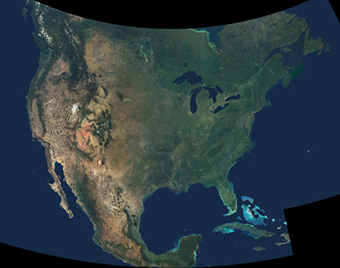
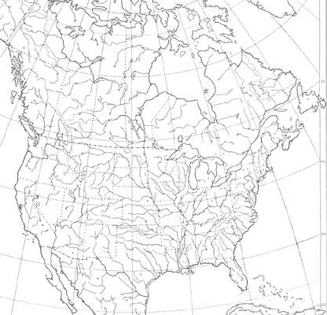
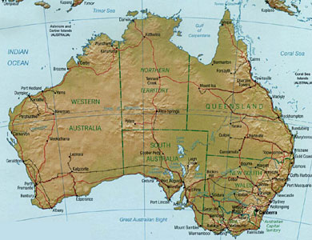
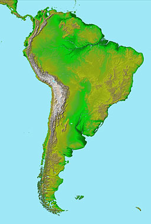
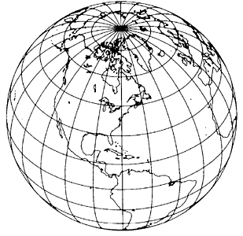
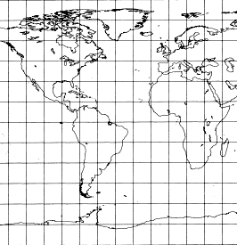
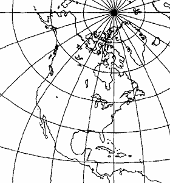

In order to display the three-dimensional surface of the Earth's spheroid on a two-dimensional map, the points on the surface of the globe need to be projected onto the map:

This inevitably leads to some distortions in the image, and many different sorts of projections have been invented that differ in how well and in what way they correctly capture Earth's features. For more information about projections, see Snyder (1987), Weisstein, and Furuti.
The projections currently supported by Cartographer are as follows:
- Albers Equal-Area Conic
- Lambert Azimuthal Equal-Area
- Lambert Conformal Conic
- Mercator
- Orthographic
- Equirectangular
- Transverse Mercator
More projections will be added in the future.
Before using a map, you will need to know what projection was used to produce it. It's not always easy to determine the projection that is used for a map: some sources of maps will specify the projection, others won't.
In addition, each of these projections have parameters that specify details of the view. For example, the Lambert Azimuthal Equal Area projection has two parameters, the standard latitude and the standard longitude. Cartographer requires that these parameters be specified, as well as some calibration points on the map with known latitudes and longitudes be specified. Mesquite can estimate the parameter values if you don't know them, but you will need to enter calibration points; more details are provided on the page about Calibrating a map and setting its parameters.
Albers Equal-Area Conic Projection
The Albers Equal-Area Conic Projection is used for large areas, as in this image of the United States of America:

Courtesy NASA/JPL-Caltech
This projection requires four parameters (two standard latitudes, an origin latitude, and an origin longitude).
Lambert Azimuthal Equal-Area Projection
In addition to its use for the Pacific Ocean and polar regions, the Lambert Azimuthal Equal-Area Projection is used for a commonly used base map of North America:

This projection requires two parameters (a standard latitude and a standard longitude).
Lambert Conformal Conic Projection
Many of the maps produced by the CIA (available at the Perry-Castañeda Library Map Collection) are Lambert Conformal Conic projections, including the following one of Australia:

This projection requires four parameters (two standard latitudes, an origin latitude, and an origin longitude).
Mercator Projection
This classic projection is still in use for many maps, such as this one of South America:

Courtesy NASA/JPL-Caltech
This projection does not require any projection parameters, only calibration points.
Orthographic Projection
The Orthographic Projection is often used for images of the entire Earth:

Base map from Snyder, 1987
This projection requires two parameters (a standard latitude and a standard longitude).
Equirectangular Projection
This is the simple projection in which each degree of longitude occupies the same distance at the equator as at the poles (and thus the map is extremely distorted at the poles). It is also known as the Rectangular or Equidistant Cylindrical Projection, as well as many other names.

This projection requires no extra parameters that are not provided by the calibration points.
Transverse Mercator Projection
The projection used for most United States topographical maps is the Transverse Mercator Projection:

Base map from Snyder, 1987
This projection requires two parameters (an origin latitude and an origin longitude).
References
Furuti, Carlos A. Cartographical Map Projections. http://www.progonos.com/furuti/MapProj/Normal/TOC/cartTOC.html
Snyder, J. P. 1987. Map Projections--A Working Manual. U. S. Geological Survey Professional Paper 1395. Washington, DC: U. S. Government Printing Office. (Available online at http://pubs.er.usgs.gov/pubs/pp/pp1395.)
Eric W. Weisstein. "Map Projection." From MathWorld--A Wolfram Web
Resource. http://mathworld.wolfram.com/MapProjection.html